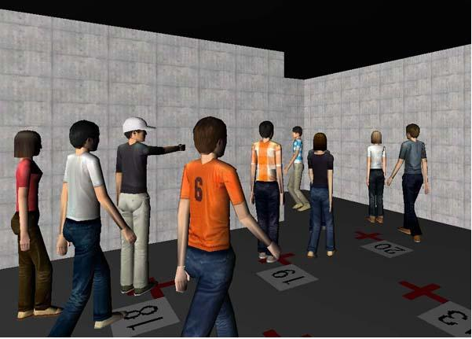
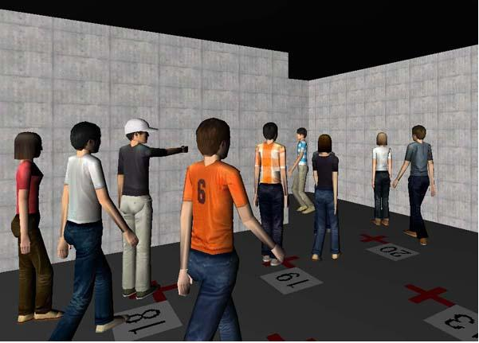

Although crisis management in such public spaces as the Kyoto station is important for citizens, they have no opportunity to participate in it. For example, in public spaces, it is impossible to carry out evacuation drills, which are very common in school and office spaces. Toward participatory crisis management, we used our virtual city space system to conduct simulated evacuation drills in a virtual Kyoto station that is a copy of the physical Kyoto station.
Correct evacuation simulations need the correct behavioral rules of crowd agents. Therefore, we designed the rules according to the results of the past real-world evacuation experiment. In the experiment, four leaders guided sixteen evacuees who were gathering in the left part of the room as shown in Figure 1(a). There are two exits and the right one is correct. The leaders had to prevent the evacuees from going toward the left wrong exit. In our initial scenario, evacuee agents make their own decisions until when they hear the leaders' instruction and follow it. This scenario did not work as the same as we expected, and did not provide the same results as the past real-world experiment. Then, we modified the scenario. In the improved scenario, each agent follows other agents until when the agent hears the leaders' instruction. Finally, we could obtain the same results.
 

(a) (b)
Figure 1. Evacuation simulation
To test educational usefulness of our evacuation simulations, we compared "transcendent observation" with "immanent experience." In the former condition, people see a bird's eye view of the simulation as shown in Figure 1(a). In the latter condition, people escape in the virtual space as shown in Figure 1(b). To see the usefulness of the immanent experience, we divided the subjects of the experiment into the following four groups: observing the simulation transcendentally; experiencing the simulation immanently; observing transcendentally before experiencing immanently; and experiencing immanently before observing transcendentally. As a result, people could learn leaders' behaviors and understand the evacuation situation the best in the third condition, in which they observed transcendentally before experienced immanently.
Toward realistic behaviors, we constructed a recording system in the Kyoto station. Figure 2(a) shows the black dots where vision sensors are attached. 12 sensors are attached in the concourse area and 16 sensors are attached in the platform. As shown in Figure 2(c), each sensor is equipped with a special mirror that can cover a wide area. Figure 2(b) shows how these sensors are installed. These sensors constitute a sensor network, which can track passengers' movements between the ticket gate and the platform. Passengers' positions can be retrieved from the camera images (Figure 2(d)) and the positions are visualized in the virtual space (Figure 2(e)). We can observe how crowd movements are affected by the surrounding environment including pillars and stairs, junctions of walking paths are generated, and collision avoidance is performed.

Figure 2. Evacuation guidance system in the Kyoto station
Our simulator is not only an educational tool to prepare for disasters but also can work as a rescue system when a disaster happens. We developed an evacuation guidance system that consists of the simulator and the sensor network in the Kyoto station. In this system, you can instruct a particular group of people remotely so that you can move multiple groups toward different directions and prevent them from rushing into the same destination. As shown in Figure 2(f), a bird's-eye view of the virtual Kyoto station allows you to grasp overall crowd behavior and indicate a person or a group to address by pointing operation, which establishes vocal channels with the mobile phones of the indicated people.
Publications:
Yohei Murakami, Toru Ishida, Tomoyuki Kawasoe and Reiko Hishiyama. Scenario Description for Multi-Agent Simulation. International Joint Conference on Autonomous Agents and Multiagent Systems (AAMAS2003), pp.369-376, 2003.
Hideyuki Nakanishi, Satoshi Koizumi, Toru Ishida and Hideaki Ito. Transcendent Communication: Location-Based Guidance for Large-Scale Public Spaces. International Conference on Human Factors in Computing Systems (CHI2004), pp.655-662, 2004.
Contact:
Hideyuki Nakanishi (nakanishi at i.kyoto-u.ac.jp) Dept. of Social Informatics, Kyoto University